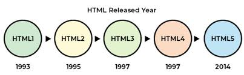

HTML5: PAST, PRESENT & FUTURE
HTML was created by
Time Berners-Lee
in late
1991
but was not realesed officially,
which was published in 1995 as HTML 2.0 HTML 4.01 was published in late 1999 and was a major

Timeline of Web Technologies
1991 html
1994 html
1997 html